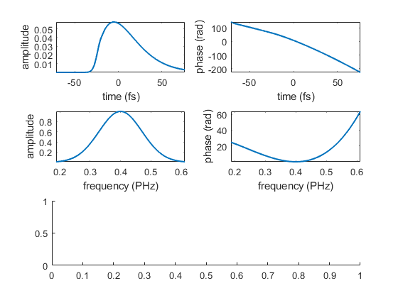
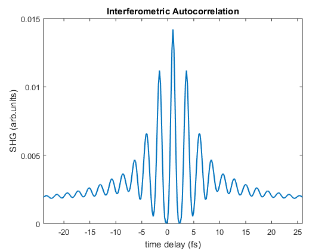

Example of interferometric autocorrelation
Contents
Set-up new pulse in frequency domain
n = 2^12; dt = 0.2; s = 0.1; t0 = 1; f0 = 0.4;
f = (-n/2:n/2-1).' /n/dt;
Ef = exp(-(f-f0).^2/s^2 +2i*pi*t0*f);
p1 = LaserPulse(f, 'PHz', Ef);
p1.polynomialPhase([50 50 0 0])
Calculate interferometric autocorrelation
ac = p1.autocorrelation();
Plot pulse
fh1 = figure();
axLst(5) = subplot(3,2,[5,6]);
for k = 1:4, axLst(k) = subplot(3, 2, k); end
p1.plot(axLst(1:4), 3)
for k=1:4, axis(axLst(k), 'tight'); end

Plot autocorrelation
plot(axLst(5), p1.timeArray, ac, 'LineWidth', 1.5);
xlim(axLst(5), [-4,4]*p1.duration + p1.timeOffset);
xlabel(axLst(5), sprintf('time delay (%s)', p1.timeUnits));
ylabel(axLst(5), 'SHG (arb.units)');
